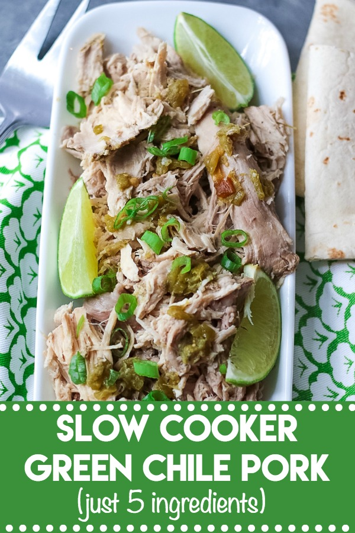

Description
It is packed full of flavor like green chiles, salsa verde, garlic and cumin, yum!!
It cooks all day until it is fall aport tender. Even the leftovers are amazing... if there
is any left!!!
Ingredients
- 2 pound boneless loin filet
- 2-3 cloves garlic minced
- 1 4oz jar diced green chiles
- 1 cup salsa verde
- 2 teaspoons cumin
- 1 1/2 teaspoons salt
- 1 teaspoon pepper
Steps
- Place everything in the slow cooker and add just enough water to almost cover the pork.
- Cook on low for 6 hours.
- Remove some of the juice from the slow cooker.
- Shred pork and leave in remaining juice in crockpot on warm.
- Serve in torillas or anyway you like!
Return to top
Return to main page